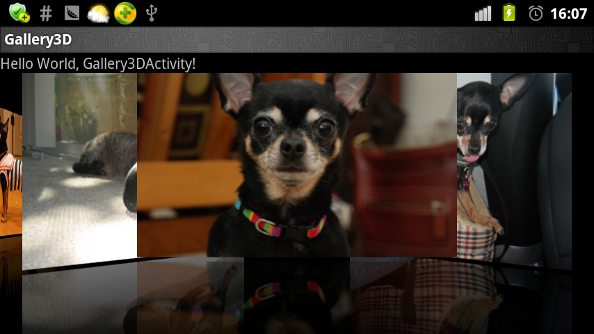

实现view切换时的3D效果原理：
protected boolean getChildStaticTransformation(View child, Transformation t)
每当gallery中的view移动时，会自动调用getChildStaticTransformation方法。其中的Transformation负责view对象如何变换。
要用Matrix进行变换可以用以下方法：
t.setTransformationType(Transformation.TYPE_MATRIX);
Matrix imageMatrix = t.getMatrix();
对imageMatrix 进行变换就可以了。

GalleryFlow
package com.iteedu.gallery3d;
import android.content.Context;
import android.graphics.Camera;
import android.graphics.Matrix;
import android.util.AttributeSet;
import android.view.View;
import android.view.animation.Transformation;
import android.widget.Gallery;
import android.widget.ImageView;
public class GalleryFlow extends Gallery {
private Camera mCamera = new Camera();//相机类
private int mMaxRotationAngle = 60;//最大转动角度
private int mMaxZoom = -300;////最大缩放值
private int mCoveflowCenter;//半径值
public GalleryFlow(Context context) {
super(context);
//支持转换 ,执行getChildStaticTransformation方法
this.setStaticTransformationsEnabled(true);
}
public GalleryFlow(Context context, AttributeSet attrs) {
super(context, attrs);
this.setStaticTransformationsEnabled(true);
}
public GalleryFlow(Context context, AttributeSet attrs, int defStyle) {
super(context, attrs, defStyle);
this.setStaticTransformationsEnabled(true);
}
public int getMaxRotationAngle() {
return mMaxRotationAngle;
}
public void setMaxRotationAngle(int maxRotationAngle) {
mMaxRotationAngle = maxRotationAngle;
}
public int getMaxZoom() {
return mMaxZoom;
}
public void setMaxZoom(int maxZoom) {
mMaxZoom = maxZoom;
}
private int getCenterOfCoverflow() {
return (getWidth() - getPaddingLeft() - getPaddingRight()) / 2
+ getPaddingLeft();
}
private static int getCenterOfView(View view) {
System.out.println("view left :"+view.getLeft());
System.out.println("view width :"+view.getWidth());
return view.getLeft() + view.getWidth() / 2;
}
//控制gallery中每个图片的旋转(重写的gallery中方法)
protected boolean getChildStaticTransformation(View child, Transformation t) {
//取得当前子view的半径值
final int childCenter = getCenterOfView(child);
System.out.println("childCenter："+childCenter);
final int childWidth = child.getWidth();
//旋转角度
int rotationAngle = 0;
//重置转换状态
t.clear();
//设置转换类型
t.setTransformationType(Transformation.TYPE_MATRIX);
//如果图片位于中心位置不需要进行旋转
if (childCenter == mCoveflowCenter) {
transformImageBitmap((ImageView) child, t, 0);
} else {
//根据图片在gallery中的位置来计算图片的旋转角度
rotationAngle = (int) (((float)
(mCoveflowCenter - childCenter) / childWidth) * mMaxRotationAngle);
System.out.println("rotationAngle:" +rotationAngle);
//如果旋转角度绝对值大于最大旋转角度返回（-mMaxRotationAngle或mMaxRotationAngle;）
if (Math.abs(rotationAngle) > mMaxRotationAngle) {
rotationAngle =
(rotationAngle < 0) ? -mMaxRotationAngle : mMaxRotationAngle;
}
transformImageBitmap((ImageView) child, t, rotationAngle);
}
return true;
}
protected void onSizeChanged(int w, int h, int oldw, int oldh) {
mCoveflowCenter = getCenterOfCoverflow();
super.onSizeChanged(w, h, oldw, oldh);
}
private void transformImageBitmap(ImageView child, Transformation t,
int rotationAngle) {
//对效果进行保存
mCamera.save();
final Matrix imageMatrix = t.getMatrix();
//图片高度
final int imageHeight = child.getLayoutParams().height;
//图片宽度
final int imageWidth = child.getLayoutParams().width;
//返回旋转角度的绝对值
final int rotation = Math.abs(rotationAngle);
// 在Z轴上正向移动camera的视角，实际效果为放大图片。
// 如果在Y轴上移动，则图片上下移动；X轴上对应图片左右移动。
mCamera.translate(0.0f, 0.0f, 100.0f);
// As the angle of the view gets less, zoom in
if (rotation < mMaxRotationAngle) {
float zoomAmount = (float) (mMaxZoom + (rotation * 1.5));
mCamera.translate(0.0f, 0.0f, zoomAmount);
}
// 在Y轴上旋转，对应图片竖向向里翻转。
// 如果在X轴上旋转，则对应图片横向向里翻转。
mCamera.rotateY(rotationAngle);
mCamera.getMatrix(imageMatrix);
imageMatrix.preTranslate(-(imageWidth / 2), -(imageHeight / 2));
imageMatrix.postTranslate((imageWidth / 2), (imageHeight / 2));
mCamera.restore();
}
}
ImageAdapter
package com.iteedu.gallery3d;
import android.content.Context;
import android.content.res.Resources;
import android.graphics.Bitmap;
import android.graphics.Bitmap.Config;
import android.graphics.BitmapFactory;
import android.graphics.Canvas;
import android.graphics.LinearGradient;
import android.graphics.Matrix;
import android.graphics.Paint;
import android.graphics.PorterDuffXfermode;
import android.graphics.Shader.TileMode;
import android.view.View;
import android.view.ViewGroup;
import android.widget.BaseAdapter;
import android.widget.ImageView;
public class ImageAdapter extends BaseAdapter {
int mGalleryItemBackground;
private Context mContext;
private Integer[] mImageIds;
private ImageView[] mImages;
public ImageAdapter(Context c, Integer[] ImageIds) {
mContext = c;
mImageIds = ImageIds;
mImages = new ImageView[mImageIds.length];
}
/**
* 创建倒影效果
* @return
*/
public boolean createReflectedImages() {
//倒影图和原图之间的距离
final int reflectionGap = 4;
int index = 0;
for (int imageId : mImageIds) {
//返回原图解码之后的bitmap对象
Bitmap originalImage = BitmapFactory.decodeResource(mContext.getResources(), imageId);
int width = originalImage.getWidth();
int height = originalImage.getHeight();
//创建矩阵对象
Matrix matrix = new Matrix();
//指定一个角度以0,0为坐标进行旋转
// matrix.setRotate(30);
//指定矩阵(x轴不变，y轴相反)
matrix.preScale(1, -1);
//将矩阵应用到该原图之中，返回一个宽度不变，高度为原图1/2的倒影位图
Bitmap reflectionImage = Bitmap.createBitmap(originalImage, 0,
height/2, width, height/2, matrix, false);
//创建一个宽度不变，高度为原图+倒影图高度的位图
Bitmap bitmapWithReflection = Bitmap.createBitmap(width,
(height + height / 2), Config.ARGB_8888);
//将上面创建的位图初始化到画布
Canvas canvas = new Canvas(bitmapWithReflection);
canvas.drawBitmap(originalImage, 0, 0, null);
Paint deafaultPaint = new Paint();
deafaultPaint.setAntiAlias(false);
// canvas.drawRect(0, height, width, height + reflectionGap,deafaultPaint);
canvas.drawBitmap(reflectionImage, 0, height + reflectionGap, null);
Paint paint = new Paint();
paint.setAntiAlias(false);
/**
* 参数一:为渐变起初点坐标x位置，
* 参数二:为y轴位置，
* 参数三和四:分辨对应渐变终点，
* 最后参数为平铺方式，
* 这里设置为镜像Gradient是基于Shader类，所以我们通过Paint的setShader方法来设置这个渐变
*/
LinearGradient shader = new LinearGradient(0,originalImage.getHeight(), 0,
bitmapWithReflection.getHeight()
+ reflectionGap,0x70ffffff, 0x00ffffff, TileMode.MIRROR);
//设置阴影
paint.setShader(shader);
paint.setXfermode(new PorterDuffXfermode(
android.graphics.PorterDuff.Mode.DST_IN));
//用已经定义好的画笔构建一个矩形阴影渐变效果
canvas.drawRect(0, height, width,
bitmapWithReflection.getHeight()+ reflectionGap, paint);
//创建一个ImageView用来显示已经画好的bitmapWithReflection
ImageView imageView = new ImageView(mContext);
imageView.setImageBitmap(bitmapWithReflection);
//设置imageView大小 ，也就是最终显示的图片大小
imageView.setLayoutParams(new GalleryFlow.LayoutParams(300, 400));
//imageView.setScaleType(ScaleType.MATRIX);
mImages[index++] = imageView;
}
return true;
}
@SuppressWarnings("unused")
private Resources getResources() {
return null;
}
public int getCount() {
return mImageIds.length;
}
public Object getItem(int position) {
return position;
}
public long getItemId(int position) {
return position;
}
public View getView(int position, View convertView, ViewGroup parent) {
return mImages[position];
}
public float getScale(boolean focused, int offset) {
return Math.max(0, 1.0f / (float) Math.pow(2, Math.abs(offset)));
}
}
Gallery3DActivity
package com.iteedu.gallery3d;
import android.app.Activity;
import android.os.Bundle;
import android.view.View;
import android.widget.AdapterView;
import android.widget.AdapterView.OnItemClickListener;
import android.widget.Toast;
public class Gallery3DActivity extends Activity {
public void onCreate(Bundle savedInstanceState) {
super.onCreate(savedInstanceState);
setContentView(R.layout.main);
Integer[] images = { R.drawable.sample_2, R.drawable.sample_3,
R.drawable.sample_4, R.drawable.sample_6 };
ImageAdapter adapter = new ImageAdapter(this, images);
adapter.createReflectedImages();//创建倒影效果
GalleryFlow galleryFlow = (GalleryFlow) this.findViewById(R.id.gy);
galleryFlow.setFadingEdgeLength(0);
galleryFlow.setSpacing(-100); //图片之间的间距
galleryFlow.setAdapter(adapter);
galleryFlow.setOnItemClickListener(new OnItemClickListener() {
@Override
public void onItemClick(AdapterView<?> parent, View view,
int position, long id) {
Toast.makeText(getApplicationContext(),
String.valueOf(position), Toast.LENGTH_SHORT).show();
}
});
galleryFlow.setSelection(2);
}
}